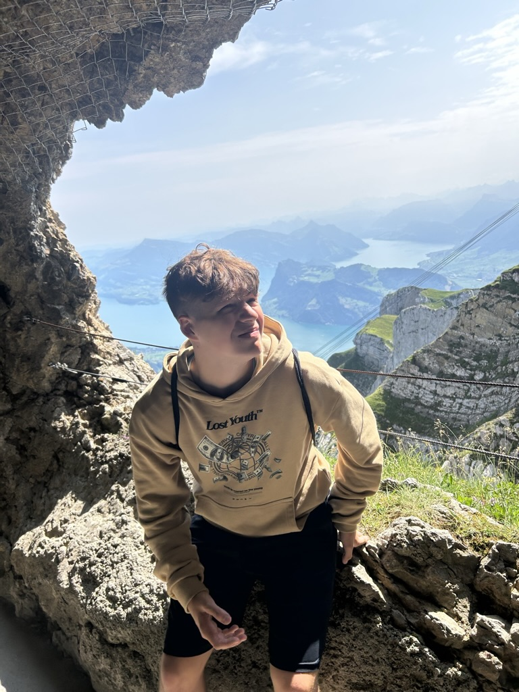

Welcome to my portfolio showcasing projects from my computer science class.

This website was created by me, Oliver Strauss, to showcase some projects completed and content covered in my high school Computer Science A class. This class was extremely important to me as it helped me find a passion for programming I didn’t realize I had.